01 · The Brief
How do you help older adults in a digital world?
That was the prompt. It was wide. So we started with interviews and observation, looking for the specific places the digital world breaks for seniors.
What came back was a mix of motor friction, social isolation, and a quiet, growing exposure to scams. Every participant had been targeted at least once. Every participant said they wanted someone to walk them through things.
-
Single-finger tap
Older users navigate one finger at a time. Multi-touch gestures and small targets miss.
-
They want a person, not a product
Interviewees described real value in one-on-one help: someone explaining, walking through, going at their pace.
-
Scams are everywhere
Every interviewee had received scam emails or messages. Most couldn't say which signals to trust.
-
Loneliness in the background
Across the group, loneliness showed up to different degrees, often making people more willing to engage with whoever reached out — including scammers.
Trying to fix "the digital world" for seniors is a trap. Pick one practical problem they actually feel every week, and build the relationship through that.
02 · Research Findings
Who we talked to, and what we watched
Semi-structured interviews on one side, short observation sessions on the other. Two findings came back strong enough to design around: a recurring persona, and a clear pattern in how older fingers actually move on a phone.
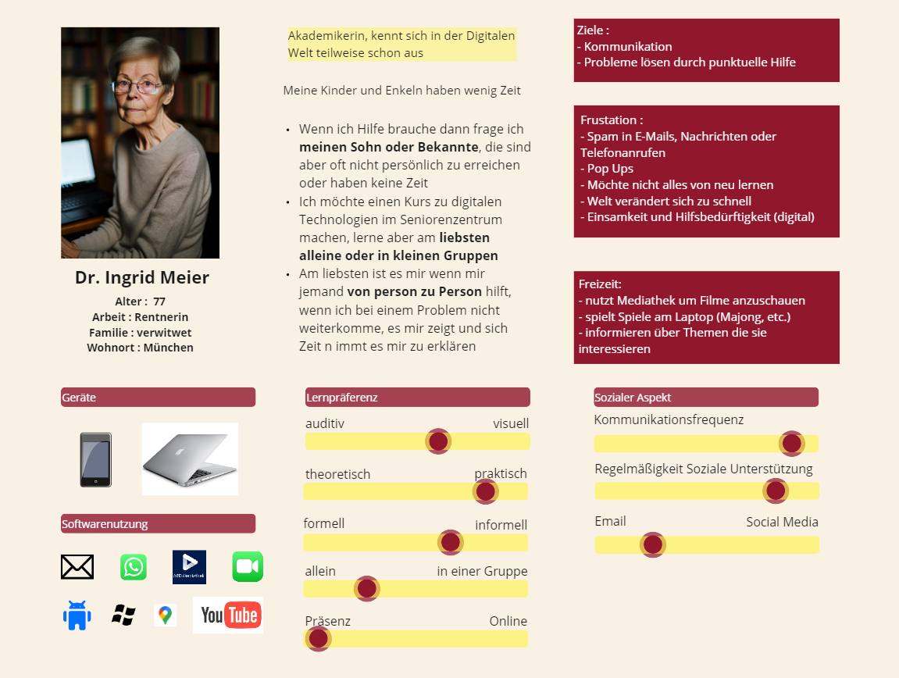
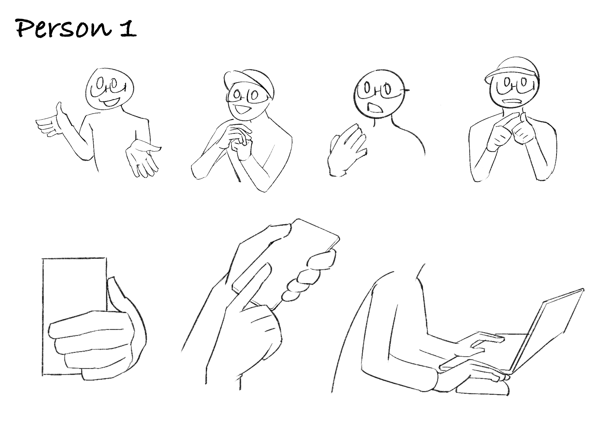
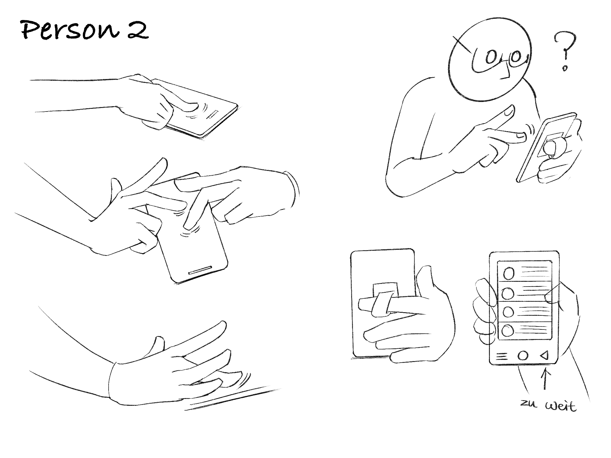
03 · First Iteration
One size doesn't fit all
We took the "one-on-one support" insight literally. The first concept was a flexible AI-powered robotic arm with a camera, sitting beside the user, watching the screen, giving spoken guidance step by step. Cheaper than a full robot, and closer to the personal-assistant feel the interviews had asked for.
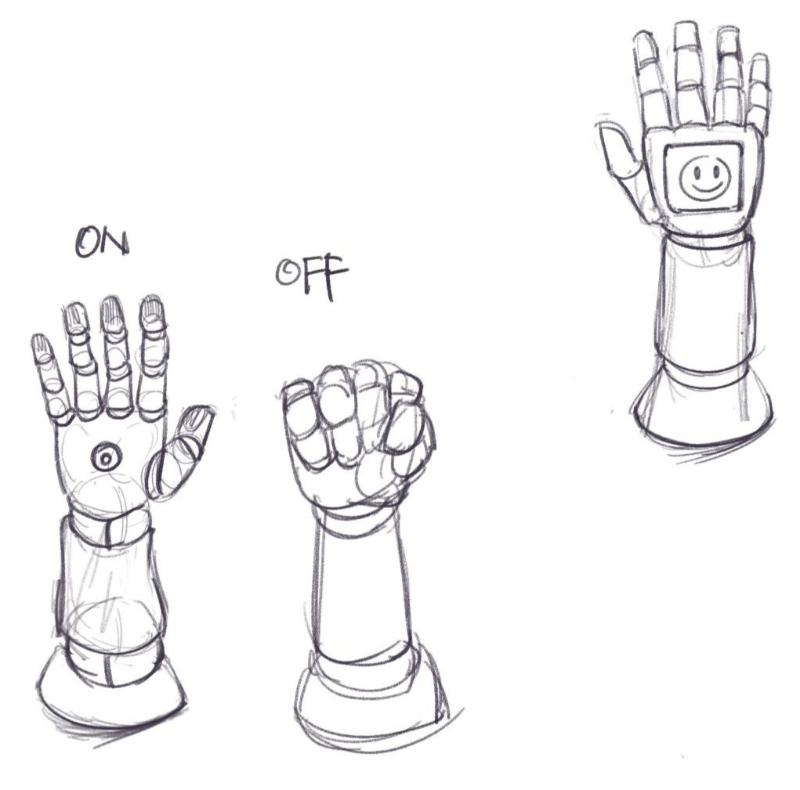
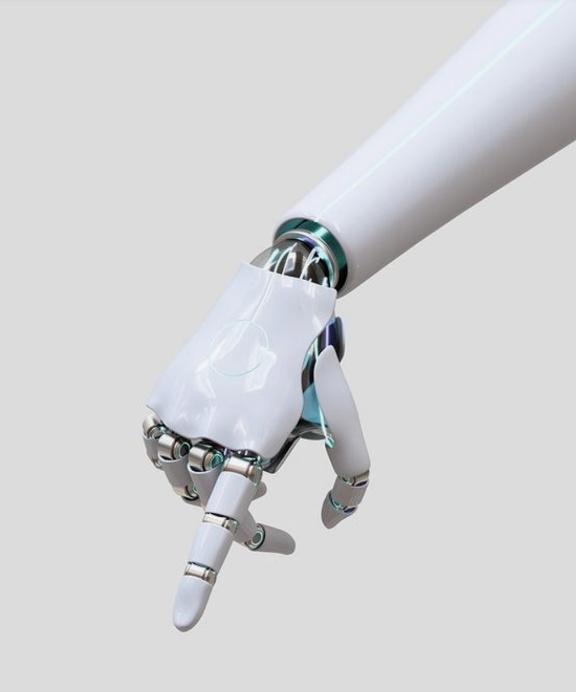
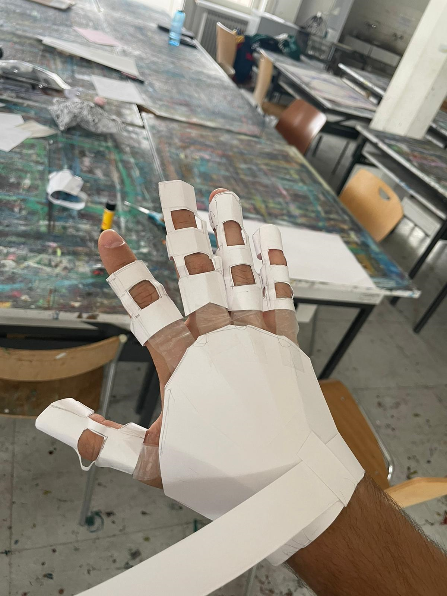
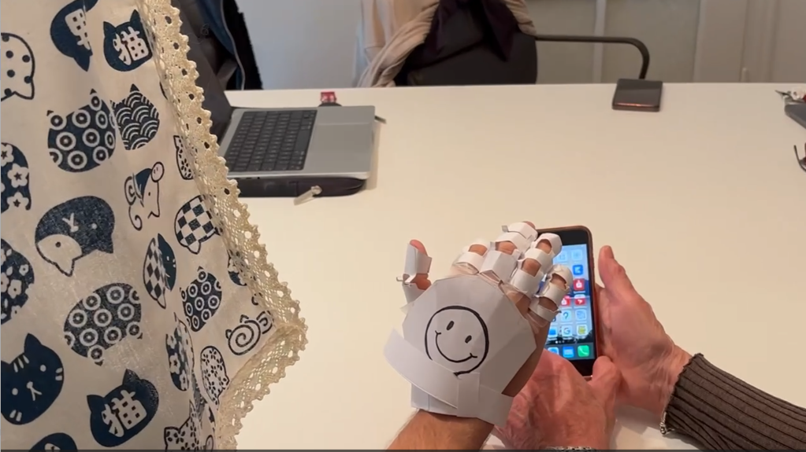
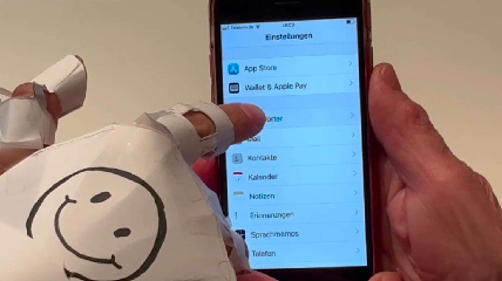
- The personal-assistant framing matched what interviewees said they wanted.
- Spoken step-by-step guidance felt closer to a person than to an app.
- The arm-plus-camera form factor stayed cheaper than a humanoid robot.
- The arm blocked the user's line of sight to the screen during use.
- No good position to mount the camera without obstructing the hand.
- The hardware path was technically heavy for a project of our scope.
04 · Back to the Interviews
Re-reading the transcripts
Killing the robotic arm forced a question: what is the one problem these users actually feel, repeatedly, that a small team can ship? We re-coded the interview reports looking for frequency, not novelty.
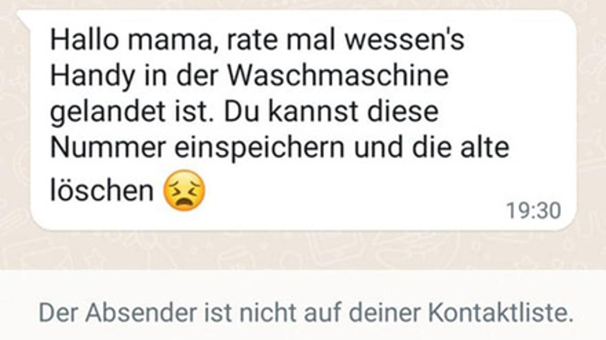
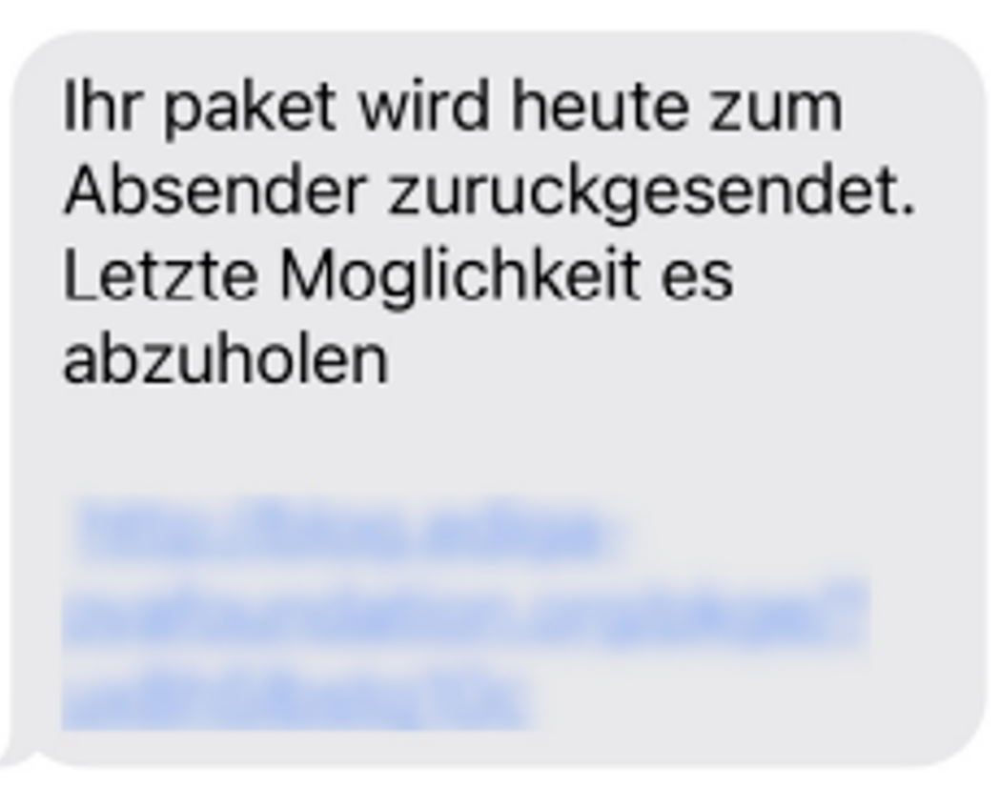
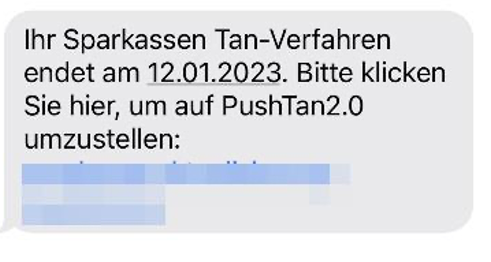
Every older adult we interviewed had encountered scam emails or messages, and every one reported some loneliness. Scam exposure is the practical problem. Loneliness is why "a buddy" was the right form factor.
05 · Second Iteration
Scam blocker + learning platform + a buddy
We dropped the hardware and built an app that does three things together. It labels suspicious messages and explains why they're suspicious. It turns those same messages into a learning path so the user gets better at spotting scams on their own. And a character — Safety Buddy — walks them through every feature so the app feels like company, not a wall of settings.
The three layers cover the three findings: scams (practical), learning (long-term value), buddy (loneliness).
06 · High-fidelity Prototype
The app, rebuilt around one problem
Three flows in the prototype: a real-time scam alert layered on top of the inbox, a learning path with simulated scams the user can practice on, and Safety Buddy as the constant companion across everything.
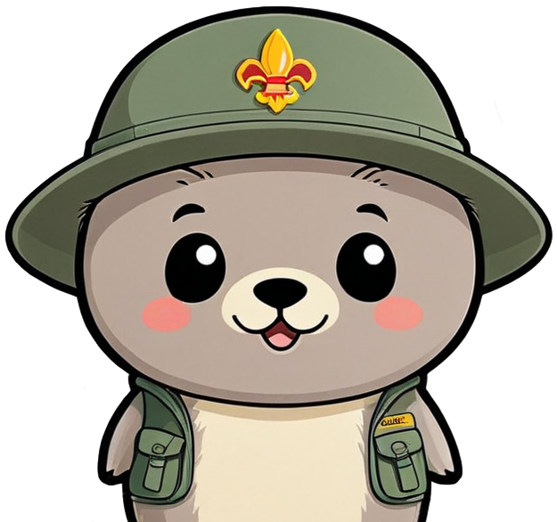

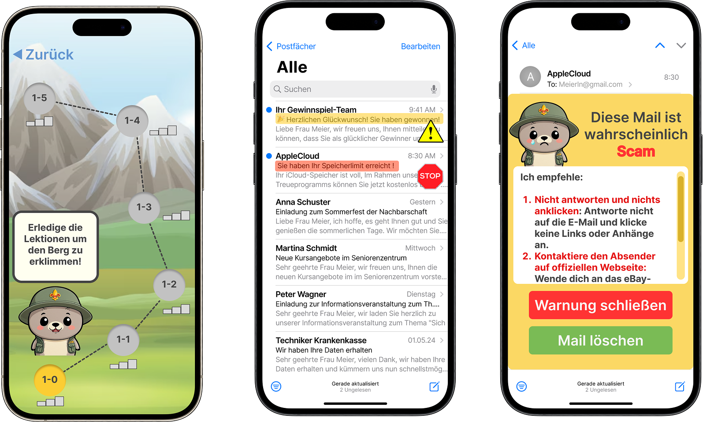
07 · Reflection
What I took away
- Killing the robotic arm early. The hardware blockers weren't going to go away, and pretending otherwise would have eaten the whole project timeline.
- Going back to the same interview reports instead of running a new round. The signal was already there, we just hadn't ranked it yet.
- Treating loneliness as a product constraint, not a separate problem. Safety Buddy as a character carried emotional weight a flat utility app couldn't.
- Run a feasibility check on the hardware idea before building the prototype, not after. Two of the three blockers were knowable on day one.
- Recruit older adults into the testing loop for both iterations, not just the final flow. Their feedback would have killed the arm faster.
- Prototype the scam-explanation flow at higher fidelity. That's the moment of value, and it deserved more design time than the mascot did.